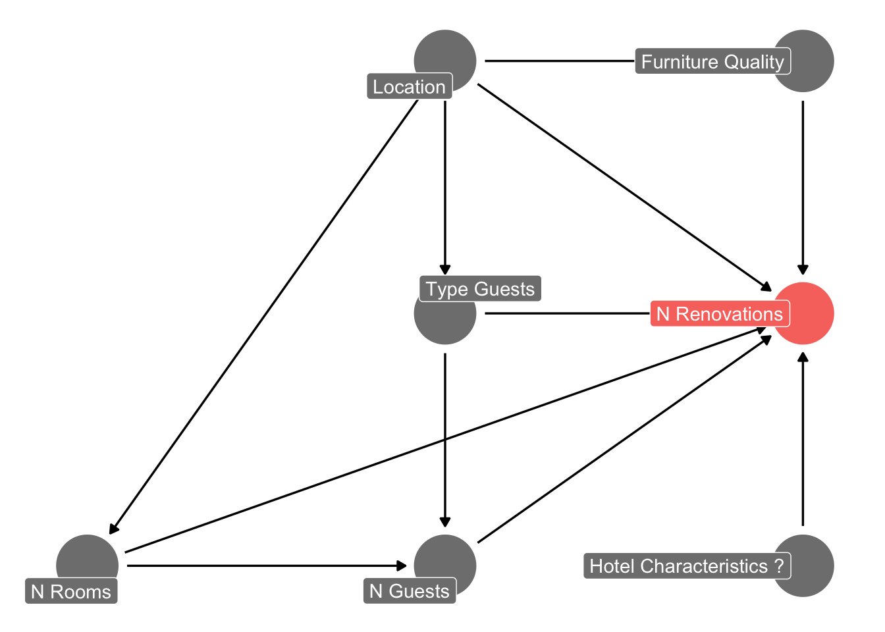
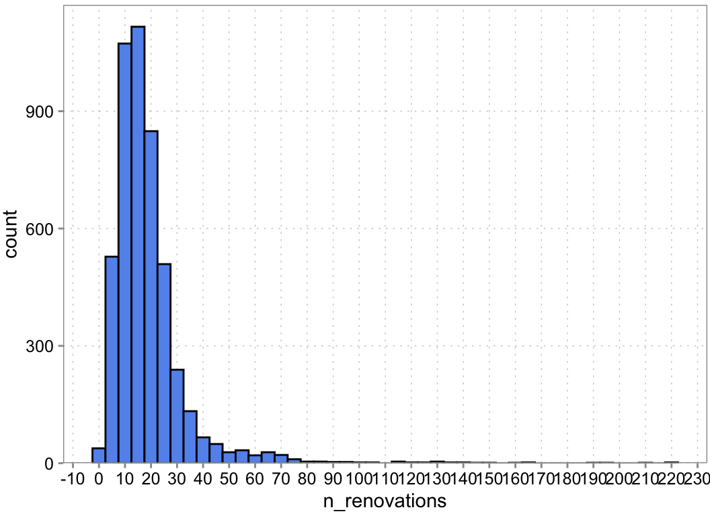
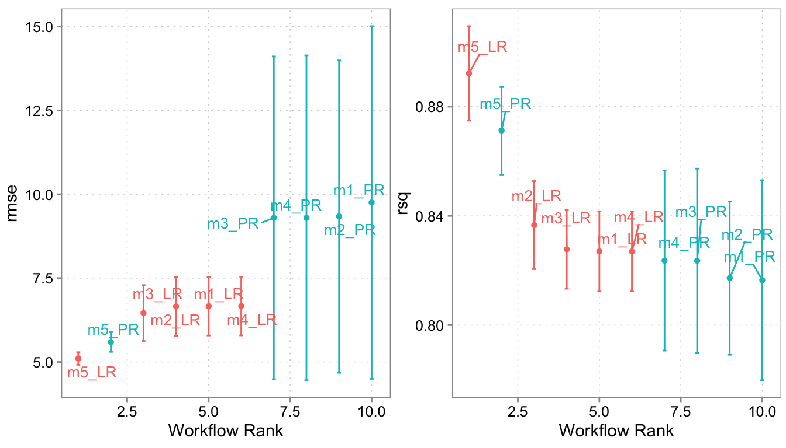
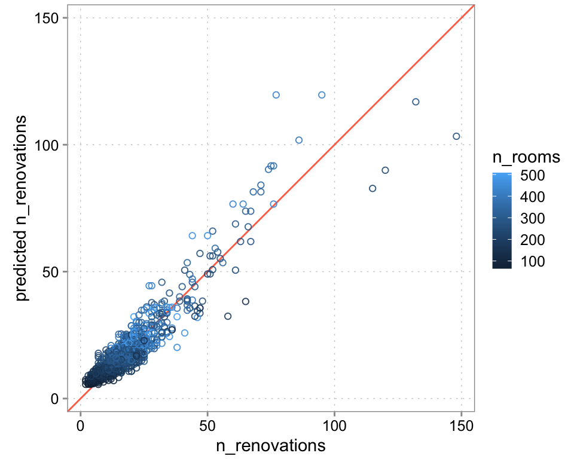
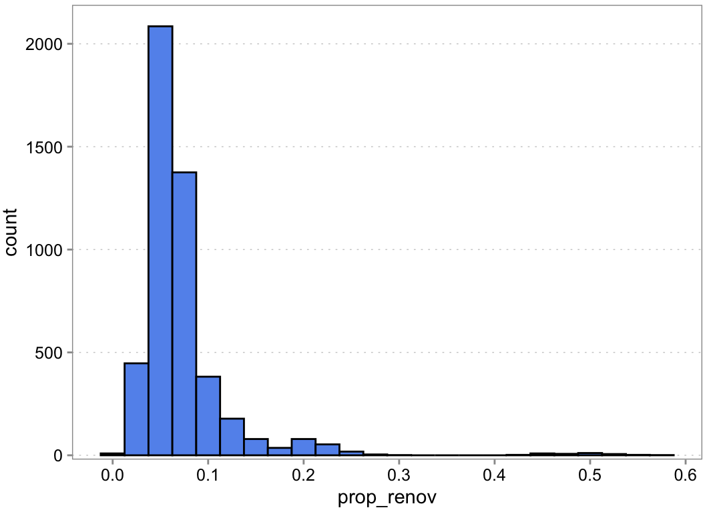
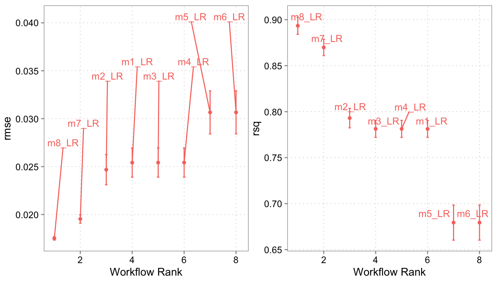

library(tidymodels)
library(poissonreg)
library(ggdag)
library(patchwork)
library(collapse, include.only = c("descr"))
source("hhs-ggtheme.R")8 Case 4: Predictive Analysis
8.1 Your task: predicting renovation costs
You are working for a hotel chain, Eden resorts. Eden resorts owns 598 hotels in various big cities and tourist destinations all across Europe. You are working on the financial planing for the upcoming year. Right now, you are tasked with predicting the group-level costs for renovating rooms. When looking at the financials of recent years, there seems to be quite a bit of variation across hotels and locations, so you decide to take a closer look at what predicts renovation costs. Not only will it help you with your current planing, but this might be useful information for future expansion plans.
8.2 Theory as the starting point
You know that you can collect some data from the hotel chain’s systems, so you first start sketching out a mental model of what might be important predictors. You start with something like this Figure 8.1:

8.3 The data
It is quite usual to adjust your mental model as you go and learn from what the data tells you. The sketch above is just a rough starting point and you should adjust it, once you start thinking more about the problem. But it is good enough to get started. For now, you use Figure 8.1 to guide your data collection efforts. You extract the following data from Eden’s systems:
dta <- readr::read_csv("analysisgen/case-hotel-renovations.csv")
dta$price_rank <- ordered(dta$price_rank, levels = 1:5)
dta$hotel_id <- factor(dta$hotel_id)
dta$location_id <- factor(dta$location_id)
glimpse(dta)Rows: 4,784
Columns: 11
$ hotel_id <fct> 1, 2, 3, 4, 5, 6, 7, 8, 9, 10, 11, 12, 13, 14, 15, …
$ year <dbl> 1, 1, 1, 1, 1, 1, 1, 1, 1, 1, 1, 1, 1, 1, 1, 1, 1, …
$ location_id <fct> 27, 51, 7, 30, 36, 1, 20, 31, 43, 16, 5, 42, 25, 43…
$ business_traveller <dbl> 0.4999054, 0.5015014, 0.6021005, 0.2023258, 0.60034…
$ young_tourists <dbl> 0.0000000000, 0.0980487616, 0.1988999322, 0.1001583…
$ family_guests <dbl> 0.30020121, 0.30034938, 0.09910840, 0.59785546, 0.2…
$ other <dbl> 0.19989338, 0.10010047, 0.09989118, 0.09966038, 0.0…
$ n_rooms <dbl> 166, 275, 191, 339, 214, 345, 436, 185, 291, 329, 3…
$ n_guests <dbl> 4328, 14339, 8714, 7279, 8679, 12592, 10609, 4502, …
$ price_rank <ord> 3, 1, 1, 2, 3, 3, 3, 4, 3, 4, 4, 4, 2, 3, 3, 1, 1, …
$ n_renovations <dbl> 5, 17, 12, 23, 18, 18, 19, 4, 18, 11, 42, 25, 35, 1…8.4 Exploratory analysis to get familiar with the data
A good first step is to examine the outcome variable of interest. A histogram to examine to univariate distribution and some descriptive statistics are usually enough to give you a sense of the data:
dta |>
ggplot(aes(x = n_renovations)) +
geom_histogram(binwidth = 5) +
scale_x_continuous(breaks = scales::breaks_width(10)) +
scale_y_continuous(expand = expansion(c(0.0,0.05))) +
theme(panel.grid.minor.x = element_blank())

# here we use the collapse::descr function
descr(dta$n_renovations)Dataset: n_renovations, 1 Variables, N = 4784
--------------------------------------------------------------------------------
n_renovations (numeric):
Statistics
N Ndist Mean SD Min Max Skew Kurt
4784 114 18.88 15.57 1 220 4.73 41.36
Quantiles
1% 5% 10% 25% 50% 75% 90% 95% 99%
3 5 7 10 16 22 31 42 76
--------------------------------------------------------------------------------8.5 Preparing the data for our comparison of different prediction models
When we compare many different models, we will always run the risk of choosing an overfit model when selecting a model based on estimates of out-of-sample performance. Even, though we will use cross-validation (discussed in Chapter 5), we can never really get rid of the fact that we are re-using and re-using the training data and will eventually be fooled by noise. So, we want to keep a bit of the data out of the training routine, so that we can asses the out-of-sample performance of the model we eventually select a bit better. We do this via the initial split function. Here we actually use a group_ split function. The reason is that we have a panel. We have hotel data for multiple years. We want to make sure that we randomly select hotels and *not’ hotel-years. By defining hotel_id as a grouping variable we make sure that all years of a hotel are in the same split (either in training or in testing).
We could also stratify slightly by the outcome variable. What this does is it sorts n_renovations in 3-4 buckets (think: low, medium, high) and ensures that training and test are roughly comparable in their proportions of low, medium, and high number of renovations. This is just a precaution to make sure our testing set is not randomly tilted in terms of the outcome. In our case, we cannot do that however, because we do not have enough data to do such stratification. So we will have to live without
set.seed(47)
splits <- group_initial_split(dta, prop = 0.8, group = hotel_id)
dta_test <- testing(splits)
dta_train <- training(splits)
splits<Training/Testing/Total>
<3824/960/4784>Next, we prepare our cross-validation folds. Again, because we have a smallish sample, we use five folds. If we had more, we’d probably go up to ten folds
set.seed(48)
folds <- group_vfold_cv(dta_train, v = 5, group = hotel_id)
print(folds)# Group 5-fold cross-validation
# A tibble: 5 × 2
splits id
<list> <chr>
1 <split [3056/768]> Resample1
2 <split [3056/768]> Resample2
3 <split [3056/768]> Resample3
4 <split [3064/760]> Resample4
5 <split [3064/760]> Resample58.6 Deciding on the preprocessing and model steps
Because number of renovations is a positive integer number, classic and poisson regressions are natural starting point for a predictive analysis. We define both model classes for use later.
Next, we define our different models. These are a combination of 1) outcome variable, 2) predictors (think x-variables) to use and 3) pre-processing (transformation) steps to be applied to the outcome or predictor variables. Such pre-processing steps could be turning a factor variable into dummy variables, adding squared terms of a particular x variable as an additional predictor, changing the scale of some predictor, and so on.
Below we just tried a few combinations to illustrate how to set up different models. We start with a recipe that defines what the outcome variables are (the variables to the left of ~) and what the predictor variables are (the variables to the right of ~). Then we apply different (pre-processing) steps.
lin_model <- linear_reg(mode = "regression", engine = "lm")
pois_model <- poisson_reg(mode = "regression", engine = "glm")
# basic steps we want in all models:
r0 <- recipe(dta_train) |>
step_normalize(all_numeric_predictors()) |>
update_role(n_renovations, new_role = "outcome")
# Individual versions of inputs for each model
# Each one updates the preceding version.
r1 <- r0 |>
update_role(c(n_rooms, n_guests), new_role = "predictor")
r2 <- r1 |>
update_role(
c(family_guests, young_tourists, business_traveller),
new_role = "predictor"
)
r3 <- r2 |>
update_role(price_rank, new_role = "predictor") |>
remove_role(c(family_guests, business_traveller), old_role = "predictor")
r4 <- r3 |>
remove_role(c(young_tourists), old_role = "predictor") |>
step_dummy(price_rank)
r5 <- r4 |>
step_poly(n_guests)Once we have defined all our models, we combine them into what tidymodels calls a workflowset. With the cross = TRUE option, we will have every combination of model specification and model class as one model in our workflow set.
model_set1 <-
workflow_set(
preproc = list(m1 = r1, m2 = r2, m3 = r3, m4 = r4, m5 = r5),
models = list(LR = lin_model, PR = pois_model),
cross = TRUE
)We now take the defined workflowset and test each model in it on the cross validation folds. Afterwards we use the rank_results function to rank the different models according to the root mean squared error metric. We chose RMSE because we are concerned about large errors. We use the verbose option in case there are model hiccups. If there is something going awry (e.g., a rank deficit matrix because we accidentally selected fully co-linear variables) then the verbose option will tell us which work flow had an issue.
model_set1_fits <- model_set1 |>
workflow_map("fit_resamples",
# Options to `workflow_map()`:
seed = 1101, verbose = TRUE,
# Options to `fit_resamples()`:
resamples = folds, control = control_resamples(save_pred = TRUE)
)i 1 of 10 resampling: m1_LR✔ 1 of 10 resampling: m1_LR (390ms)i 2 of 10 resampling: m1_PR✔ 2 of 10 resampling: m1_PR (446ms)i 3 of 10 resampling: m2_LR✔ 3 of 10 resampling: m2_LR (350ms)i 4 of 10 resampling: m2_PR✔ 4 of 10 resampling: m2_PR (392ms)i 5 of 10 resampling: m3_LR✔ 5 of 10 resampling: m3_LR (389ms)i 6 of 10 resampling: m3_PR✔ 6 of 10 resampling: m3_PR (407ms)i 7 of 10 resampling: m4_LR✔ 7 of 10 resampling: m4_LR (436ms)i 8 of 10 resampling: m4_PR✔ 8 of 10 resampling: m4_PR (501ms)i 9 of 10 resampling: m5_LR✔ 9 of 10 resampling: m5_LR (516ms)i 10 of 10 resampling: m5_PR✔ 10 of 10 resampling: m5_PR (513ms)results_ranked <- rank_results(model_set1_fits, rank_metric ="rmse")
results_ranked| wflow_id | .config | .metric | mean | std_err | n | preprocessor | model | rank |
|---|---|---|---|---|---|---|---|---|
| m5_LR | Preprocessor1_Model1 | rmse | 5.1039410 | 0.1142833 | 5 | recipe | linear_reg | 1 |
| m5_LR | Preprocessor1_Model1 | rsq | 0.8921882 | 0.0105114 | 5 | recipe | linear_reg | 1 |
| m5_PR | Preprocessor1_Model1 | rmse | 5.5953959 | 0.1784644 | 5 | recipe | poisson_reg | 2 |
| m5_PR | Preprocessor1_Model1 | rsq | 0.8712556 | 0.0098076 | 5 | recipe | poisson_reg | 2 |
| m2_LR | Preprocessor1_Model1 | rmse | 6.4590636 | 0.5066752 | 5 | recipe | linear_reg | 3 |
| m2_LR | Preprocessor1_Model1 | rsq | 0.8366325 | 0.0097929 | 5 | recipe | linear_reg | 3 |
| m3_LR | Preprocessor1_Model1 | rmse | 6.6542800 | 0.5337972 | 5 | recipe | linear_reg | 4 |
| m3_LR | Preprocessor1_Model1 | rsq | 0.8277737 | 0.0087733 | 5 | recipe | linear_reg | 4 |
| m1_LR | Preprocessor1_Model1 | rmse | 6.6630687 | 0.5310946 | 5 | recipe | linear_reg | 5 |
| m1_LR | Preprocessor1_Model1 | rsq | 0.8270034 | 0.0089140 | 5 | recipe | linear_reg | 5 |
| m4_LR | Preprocessor1_Model1 | rmse | 6.6679279 | 0.5322714 | 5 | recipe | linear_reg | 6 |
| m4_LR | Preprocessor1_Model1 | rsq | 0.8269635 | 0.0088787 | 5 | recipe | linear_reg | 6 |
| m3_PR | Preprocessor1_Model1 | rmse | 9.2980625 | 2.9251509 | 5 | recipe | poisson_reg | 7 |
| m3_PR | Preprocessor1_Model1 | rsq | 0.8236051 | 0.0204790 | 5 | recipe | poisson_reg | 7 |
| m4_PR | Preprocessor1_Model1 | rmse | 9.2999108 | 2.9435093 | 5 | recipe | poisson_reg | 8 |
| m4_PR | Preprocessor1_Model1 | rsq | 0.8236239 | 0.0200314 | 5 | recipe | poisson_reg | 8 |
| m2_PR | Preprocessor1_Model1 | rmse | 9.3430279 | 2.8358556 | 5 | recipe | poisson_reg | 9 |
| m2_PR | Preprocessor1_Model1 | rsq | 0.8172004 | 0.0170434 | 5 | recipe | poisson_reg | 9 |
| m1_PR | Preprocessor1_Model1 | rmse | 9.7550377 | 3.1962170 | 5 | recipe | poisson_reg | 10 |
| m1_PR | Preprocessor1_Model1 | rsq | 0.8164530 | 0.0222492 | 5 | recipe | poisson_reg | 10 |
We can also look at the results in figure form:
p1 <-
autoplot(model_set1_fits, metric = "rmse") +
ggrepel::geom_text_repel(aes(label = wflow_id),
nudge_x = 1/8, nudge_y = 1/100, size = 3.5) +
theme(legend.position = "none")
p2 <-
autoplot(model_set1_fits, metric = "rsq") +
ggrepel::geom_text_repel(aes(label = wflow_id),
nudge_x = 1/8, nudge_y = 1/100, size = 3.5) +
theme(legend.position = "none")
(p1 + p2)

Apparently, the last model with a polynomial specification and price rank dummies does best. Let us take this as our chosen model. We now take it and fit it to the whole training data. And then we will finally assess how well it does on the test sample.
8.6.1 Fitting the chosen model
We choose the best combination via its workflow id wflow_id, fit it to the whole training data this time, and use it to predict the time to repair on the 20% test sample we have not used yet. To better explore the performance of our model it often helps to add our predictions to the test sample:
best_wf_id <- results_ranked$wflow_id[1]
chosen_wf <- extract_workflow(model_set1_fits, best_wf_id)
# we want to refit the best model/workflow on the full training set
chosen_wf_fit <- fit(chosen_wf, data = dta_train)
# Now we can use the fitted model to predict on the test set
chosen_wf_pred <-
predict(chosen_wf_fit, new_data = dta_test) |>
bind_cols(dta_test)
head(chosen_wf_pred)| .pred | hotel_id | year | location_id | business_traveller | young_tourists | family_guests | other | n_rooms | n_guests | price_rank | n_renovations |
|---|---|---|---|---|---|---|---|---|---|---|---|
| 21.30290 | 2 | 1 | 51 | 0.5015014 | 0.0980488 | 0.3003494 | 0.1001005 | 275 | 14339 | 1 | 17 |
| 20.72327 | 6 | 1 | 1 | 0.5983723 | 0.1010449 | 0.3005828 | 0.0000000 | 345 | 12592 | 3 | 18 |
| 20.36197 | 7 | 1 | 20 | 0.3017600 | 0.3002343 | 0.3980058 | 0.0000000 | 436 | 10609 | 3 | 19 |
| 10.34511 | 25 | 1 | 15 | 0.4000042 | 0.1022022 | 0.4977937 | 0.0000000 | 194 | 5901 | 2 | 10 |
| 11.84515 | 30 | 1 | 57 | 0.5996767 | 0.2008716 | 0.1994516 | 0.0000000 | 162 | 8447 | 2 | 17 |
| 13.04520 | 34 | 1 | 30 | 0.1993054 | 0.0987191 | 0.6016988 | 0.1002767 | 294 | 6707 | 2 | 14 |
Finally, we can see what the RMSE is on the held-out test data
rmse(chosen_wf_pred, truth = n_renovations, estimate = .pred)| .metric | .estimator | .estimate |
|---|---|---|
| rmse | standard | 5.391455 |
mae(chosen_wf_pred, truth = n_renovations, estimate = .pred)| .metric | .estimator | .estimate |
|---|---|---|
| mae | standard | 3.693395 |
So on average, we are off by 3.6 renovations by year or 5.3 root squared renovations. Given that the mean number of rennovations in the full dataset is 18.9 and the median is 16 that MAE is ca 23% of the median. So, in terms of magnitude it is still sizable. How expensive this error is, we can only assess once we know the cost of a renovation though.
We should also always look at a plot of predicted versus actual outcomes. This looks quite decent. We do seem to struggle a bit with the outliers. Also, while a bit hard to see, we seem to not do so well at the very low end ever. We seem to systematically overshoot the hotel-years with a very low number of renovations.
chosen_wf_pred |>
ggplot(aes(y = .pred, x = n_renovations, color = n_rooms)) +
scale_y_continuous(limits = range(chosen_wf_pred$n_renovations)) +
scale_x_continuous(limits = range(chosen_wf_pred$n_renovations)) +
geom_abline(intercept = 0, slope = 1, color = "coral1") +
geom_point(alpha = 0.9, shape = 21) +
labs(y = "predicted n_renovations") +
theme(legend.position = "right")+
coord_fixed(ratio = 1)

8.7 An alternative set of model with transformed outcomes
Sometimes we can improve predictive performance by transforming the outcome variable. This can sometimes make the functional form tying the outcome variable to predictors more easy to fit. In our case, the number of renovations is obviously heavily dependent on the number of rooms the hotel has. Maybe a better question to ask is: what proportion of hotel rooms is renovated? We can then also frame the number of guests as a proportion of rooms to get to a predictor that reflects how often the average room is used (something like room booking frequency). These transformed variables might be be closer to the underlying mechanism that determines how fast a room “wears out”. Let us do these transformations and try everything again:
dta2 <- dta |>
mutate(
prop_renov = n_renovations / n_rooms,
room_freq = n_guests / n_rooms
)Let’s see how the new outcome variable is distributed
dta2 |>
ggplot(aes(x = prop_renov)) +
geom_histogram(binwidth = 0.025) +
scale_x_continuous(n.breaks = 10) +
scale_y_continuous(expand = expansion(c(0.01,0.05))) +
theme(panel.grid.major.x = element_blank())

descr(dta2$prop_renov)Dataset: prop_renov, 1 Variables, N = 4784
--------------------------------------------------------------------------------
prop_renov (numeric):
Statistics
N Ndist Mean SD Min Max Skew Kurt
4784 2367 0.07 0.05 0.01 0.57 4.63 33.4
Quantiles
1% 5% 10% 25% 50% 75% 90% 95% 99%
0.02 0.03 0.04 0.05 0.06 0.08 0.11 0.15 0.25
--------------------------------------------------------------------------------This is still a pretty skewed distribution. The descriptives show you that we have one year where more than 50% of the rooms were renovated. So, visually it is hard to tell whether this outcome might or might not be hard to get right. Let us carry on nevertheless. It seems a bit easier to reason about it.
We do our data preparation steps again. This time we do a split that is aware of hotel_id and we also do a cross-validation that is aware of hotel_id. This means, that we effectively randomly choose hotels for the test and training set and for the different folds. This is important because we want to make sure that we do not accidentally train on the same hotel in the training and test set.
set.seed(47)
splits2 <- group_initial_split(dta2, prop = 0.8, group = hotel_id)
dta_test2 <- testing(splits2)
dta_train2 <- training(splits2)
set.seed(48)
folds2 <- group_vfold_cv(dta_train2, v = 5, group = hotel_id)
print(folds2)# Group 5-fold cross-validation
# A tibble: 5 × 2
splits id
<list> <chr>
1 <split [3056/768]> Resample1
2 <split [3056/768]> Resample2
3 <split [3056/768]> Resample3
4 <split [3064/760]> Resample4
5 <split [3064/760]> Resample5And we define new models
r0 <- recipe(dta_train2) |>
update_role(prop_renov, new_role = "outcome")
r1 <- r0 |>
update_role(room_freq, new_role = "predictor")
r2 <- r1 |>
update_role(c(family_guests, young_tourists, business_traveller),
new_role = "predictor")
r3 <- r1 |>
update_role(price_rank, new_role = "predictor") |>
step_dummy(price_rank)
r4 <- r1 |>
update_role(price_rank, new_role = "predictor") |>
step_dummy(price_rank)
r5 <- r3 |>
step_sqrt(room_freq)
r6 <- r4 |>
step_sqrt(room_freq)
# Here we "accidentally" add another transformation to room_freq after taking
# the square root. This is just to illustrate that you can chain transformations
r7 <- r6 |>
step_poly(room_freq)
# Here we leave out the root transformation step
r8 <- r4 |>
step_poly(room_freq)
model_set2 <-
workflow_set(
preproc = list(m1 = r1, m2 = r2, m3 = r3, m4 = r4, m5 = r5,
m6 = r6, m7 = r7, m8 = r8),
models = list(LR = lin_model),
cross = TRUE
)
model_set2_fits <-
model_set2 |>
workflow_map("fit_resamples",
# Options to `workflow_map()`:
seed = 1101, verbose = TRUE,
# Options to `fit_resamples()`:
resamples = folds2, control = control_resamples(save_pred = TRUE)
)i 1 of 8 resampling: m1_LR✔ 1 of 8 resampling: m1_LR (260ms)i 2 of 8 resampling: m2_LR✔ 2 of 8 resampling: m2_LR (247ms)i 3 of 8 resampling: m3_LR✔ 3 of 8 resampling: m3_LR (365ms)i 4 of 8 resampling: m4_LR✔ 4 of 8 resampling: m4_LR (360ms)i 5 of 8 resampling: m5_LR✔ 5 of 8 resampling: m5_LR (415ms)i 6 of 8 resampling: m6_LR✔ 6 of 8 resampling: m6_LR (374ms)i 7 of 8 resampling: m7_LR✔ 7 of 8 resampling: m7_LR (435ms)i 8 of 8 resampling: m8_LR✔ 8 of 8 resampling: m8_LR (377ms)results_ranked2 <- rank_results(model_set2_fits, rank_metric ="rmse")
results_ranked2| wflow_id | .config | .metric | mean | std_err | n | preprocessor | model | rank |
|---|---|---|---|---|---|---|---|---|
| m8_LR | Preprocessor1_Model1 | rmse | 0.0175113 | 0.0001133 | 5 | recipe | linear_reg | 1 |
| m8_LR | Preprocessor1_Model1 | rsq | 0.8934329 | 0.0056298 | 5 | recipe | linear_reg | 1 |
| m7_LR | Preprocessor1_Model1 | rmse | 0.0195329 | 0.0002670 | 5 | recipe | linear_reg | 2 |
| m7_LR | Preprocessor1_Model1 | rsq | 0.8698446 | 0.0054223 | 5 | recipe | linear_reg | 2 |
| m2_LR | Preprocessor1_Model1 | rmse | 0.0246799 | 0.0009618 | 5 | recipe | linear_reg | 3 |
| m2_LR | Preprocessor1_Model1 | rsq | 0.7930346 | 0.0064618 | 5 | recipe | linear_reg | 3 |
| m1_LR | Preprocessor1_Model1 | rmse | 0.0254176 | 0.0009275 | 5 | recipe | linear_reg | 4 |
| m1_LR | Preprocessor1_Model1 | rsq | 0.7812376 | 0.0055907 | 5 | recipe | linear_reg | 4 |
| m3_LR | Preprocessor1_Model1 | rmse | 0.0254212 | 0.0009242 | 5 | recipe | linear_reg | 5 |
| m3_LR | Preprocessor1_Model1 | rsq | 0.7813003 | 0.0056343 | 5 | recipe | linear_reg | 5 |
| m4_LR | Preprocessor1_Model1 | rmse | 0.0254212 | 0.0009242 | 5 | recipe | linear_reg | 6 |
| m4_LR | Preprocessor1_Model1 | rsq | 0.7813003 | 0.0056343 | 5 | recipe | linear_reg | 6 |
| m5_LR | Preprocessor1_Model1 | rmse | 0.0306539 | 0.0013636 | 5 | recipe | linear_reg | 7 |
| m5_LR | Preprocessor1_Model1 | rsq | 0.6793816 | 0.0116053 | 5 | recipe | linear_reg | 7 |
| m6_LR | Preprocessor1_Model1 | rmse | 0.0306539 | 0.0013636 | 5 | recipe | linear_reg | 8 |
| m6_LR | Preprocessor1_Model1 | rsq | 0.6793816 | 0.0116053 | 5 | recipe | linear_reg | 8 |
Because we have transformed the outcome variable, the RMSE is now in terms of renovation proportions and not renovations anymore. So, when we want to compare our new predictions with the old ones we need to create a new variable that is the predicted proportion of renovations times the number of rooms (line 15 below)
best_model_id2 <- results_ranked2$wflow_id[1]
chosen_wf2 <- extract_workflow(model_set2, best_model_id2)
chosen_wf_fit2 <- fit(chosen_wf2, data = dta_train2)
chosen_wf_pred2 <-
predict(chosen_wf_fit2, new_data = dta_test2) |>
bind_cols(dta_test2) |>
mutate(pred_renov = n_rooms * .pred)
head(chosen_wf_pred2)| .pred | hotel_id | year | location_id | business_traveller | young_tourists | family_guests | other | n_rooms | n_guests | price_rank | n_renovations | prop_renov | room_freq | pred_renov |
|---|---|---|---|---|---|---|---|---|---|---|---|---|---|---|
| 0.0726838 | 2 | 1 | 51 | 0.5015014 | 0.0980488 | 0.3003494 | 0.1001005 | 275 | 14339 | 1 | 17 | 0.0618182 | 52.14182 | 19.98803 |
| 0.0576970 | 6 | 1 | 1 | 0.5983723 | 0.1010449 | 0.3005828 | 0.0000000 | 345 | 12592 | 3 | 18 | 0.0521739 | 36.49855 | 19.90548 |
| 0.0517974 | 7 | 1 | 20 | 0.3017600 | 0.3002343 | 0.3980058 | 0.0000000 | 436 | 10609 | 3 | 19 | 0.0435780 | 24.33257 | 22.58365 |
| 0.0548770 | 25 | 1 | 15 | 0.4000042 | 0.1022022 | 0.4977937 | 0.0000000 | 194 | 5901 | 2 | 10 | 0.0515464 | 30.41753 | 10.64613 |
| 0.0723110 | 30 | 1 | 57 | 0.5996767 | 0.2008716 | 0.1994516 | 0.0000000 | 162 | 8447 | 2 | 17 | 0.1049383 | 52.14198 | 11.71438 |
| 0.0520340 | 34 | 1 | 30 | 0.1993054 | 0.0987191 | 0.6016988 | 0.1002767 | 294 | 6707 | 2 | 14 | 0.0476190 | 22.81293 | 15.29800 |
Just out of curiosity, do we have any observations, where we predict a negative proportion? (Which would be obviously non-sensical?)
chosen_wf_pred2 |>
filter(.pred < 0)| .pred | hotel_id | year | location_id | business_traveller | young_tourists | family_guests | other | n_rooms | n_guests | price_rank | n_renovations | prop_renov | room_freq | pred_renov |
|---|
It does not look like it. That is a good sign for our model fit. For the range of predictors we have in the test sample, we do not get obvious non-sense
rmse(chosen_wf_pred2, truth = n_renovations, estimate = pred_renov)| .metric | .estimator | .estimate |
|---|---|---|
| rmse | standard | 4.35196 |
mae(chosen_wf_pred2, truth = n_renovations, estimate = pred_renov)| .metric | .estimator | .estimate |
|---|---|---|
| mae | standard | 3.337173 |
p1 <-
autoplot(model_set2_fits, metric = "rmse") +
ggrepel::geom_text_repel(aes(label = wflow_id),
nudge_x = 1/8, nudge_y = 1/100, size = 3.5) +
theme(legend.position = "none")
p2 <-
autoplot(model_set2_fits, metric = "rsq") +
ggrepel::geom_text_repel(aes(label = wflow_id),
nudge_x = 1/8, nudge_y = 1/100, size = 3.5) +
theme(legend.position = "none")
(p1 + p2)

Our transformation did seem to help. We managed to get the RMSE down quite a bit and also slightly reduced the MAE. We can double check the coefficients of our regression model as well to see whether the coefficients are looking reasonable. However, there is an important caveat here. The coefficients might not be intuitively interpretable. That is because we have not designed the regression with isolating specific associations in mind. We only cared about prediction performance when designing the model. You need a DAG again, to see whether and how you can interpret the coefficients.
chosen_wf_fit2 |> tidy()| term | estimate | std.error | statistic | p.value |
|---|---|---|---|---|
| (Intercept) | 0.0736671 | 0.0002829 | 260.3711341 | 0.0000000 |
| price_rank_1 | -0.0000395 | 0.0006330 | -0.0623999 | 0.9502476 |
| price_rank_2 | 0.0002934 | 0.0006332 | 0.4633856 | 0.6431144 |
| price_rank_3 | -0.0006555 | 0.0006323 | -1.0366214 | 0.2999780 |
| price_rank_4 | -0.0008310 | 0.0006337 | -1.3114308 | 0.1897911 |
| room_freq_poly_1 | 2.9360529 | 0.0174895 | 167.8756006 | 0.0000000 |
| room_freq_poly_2 | 1.1394086 | 0.0174928 | 65.1359602 | 0.0000000 |
chosen_wf_pred2 |>
ggplot(aes(y = pred_renov, x = n_renovations, color = n_rooms)) +
scale_y_continuous(limits = range(chosen_wf_pred$n_renovations)) +
scale_x_continuous(limits = range(chosen_wf_pred$n_renovations)) +
geom_abline(intercept = 0, slope = 1, color = "coral1") +
geom_point(alpha = 0.9, shape = 21) +
labs(y = "predicted n_renovations") +
theme(legend.position = "right") +
coord_fixed(ratio = 1) 
It looks like the transformed regression really helped us doing a better job at the outlying observations (That is also why the RMSE went down more than the MAE). We also seem to do a better job with the hotel-years with low number of observations. This is a common reason why we want to think about transformations in the first place. Whenever we see that we have trouble predicting a specific part of the distribution correctly, we might want to see whether we can transform the distribution to something easier to fit.
8.8 Takeaway
Similar to our example in Chapter 5, we still need to decide whether we can use the last model for our cost forecasts problem. The individual error still seems large. It is 22% of the median of number of renovations. So, how should we proceed. We could carry on and try to improve the model. Rethink our mental model based on what we learned and maybe, if possible, collect additional predictors that we have not yet considered. Before doing that though, we should first remember that our goal is to forecast group-level renovation costs. So we a) also need costs pre renovation (which likely varies by location and hotel) and b) need to look at the error in agreggate renovations. Because that is ultimately what we want to forecast. If individual errors cancel out, we might do okay with the model we have already. So let us have a look at aggregate errors
chosen_wf_pred2 |>
summarize(
agg_n_renov = sum(n_renovations),
agg_pred_n_renov = sum(pred_renov),
.by = year
)| year | agg_n_renov | agg_pred_n_renov |
|---|---|---|
| 1 | 2179 | 2186.087 |
| 2 | 2426 | 2460.168 |
| 3 | 2205 | 2201.324 |
| 4 | 2255 | 2242.882 |
| 5 | 2225 | 2256.381 |
| 6 | 2088 | 2148.629 |
| 7 | 2075 | 2105.781 |
| 8 | 2473 | 2498.596 |
That looks quite okay for all the years we have date in our test sample. We need cost per renovation to make the ultimate decision, but this model might be good enough to carry on with your budget planing.